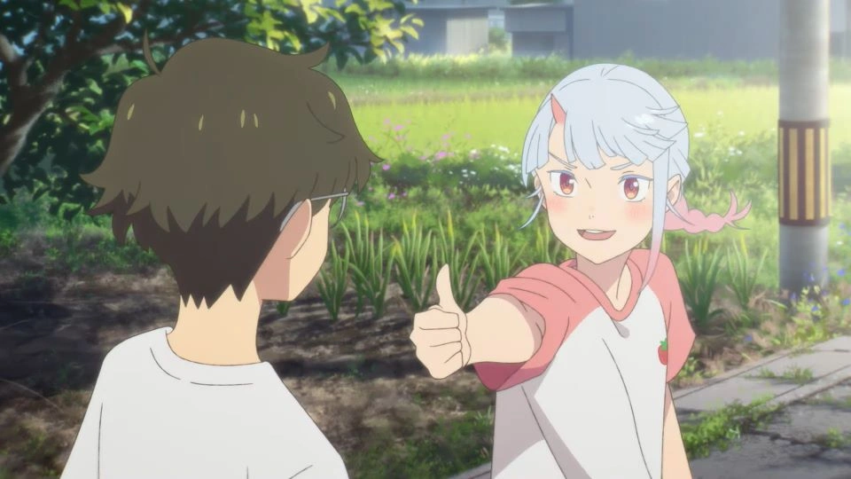

☆Gênero: Romance/ Fantasia/ Aventura
☆lançamento: 24/03/2024
☆diretor(a): Tomotaka Shibayama
☆Studio: Studio Colorido
☆classificação indicativa: +12
☆Duração: 1h 52mn
avaliação:★★★☆☆ (3,1)
Sinopse
Sua vida toma um rumo inesperado quando, em um dia de verão, ele conhece Tsumugi (Miyu Tomita), uma garota oni, que nada mais é do que um demônio, em uma missão para encontrar sua mãe no mundo humano. Misteriosamente, começa a nevar e assim se inicia a aventura deles.